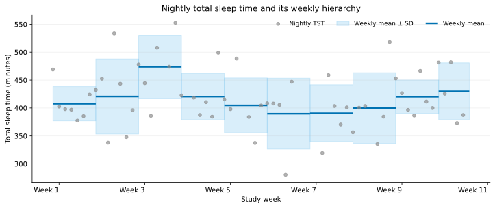

Resolutions and hierarchies
resolution answers two questions: where each row begins and ends, and
which observations contribute to its value. A scalar requests one level. A
sequence builds larger windows from validated rows at the preceding level.
Choose a resolution
Family |
Examples |
Use it for |
|---|---|---|
Fixed duration |
|
Regular windows on a physical timeline |
Calendar |
|
Participant-local calendar summaries |
Nightly |
|
One main-sleep summary per sleep calendar date |
Sleep-anchored cycle |
|
Physical streams aligned to an individual’s sleep schedule |
The three-month calendars use fixed boundaries at midnight:
"seasonal": 21 March, 21 June, 21 September, and 21 December."seasonal_meteorological": 1 March, 1 June, 1 September, and 1 December."quarterly"(alias"quarter"): 1 January, 1 April, 1 July, and 1 October.
They can also be hierarchy parents, for example
resolution=("nightly", "seasonal").
For timestamped streams, fixed windows use UTC by default when UTC timestamps
are available. Calendar and sleep-anchored windows use participant-local time.
Set time_reference="local" when a fixed-window analysis should follow the
local clock. Fixed-window results keep the selected clock in the index and
report the other clock together with the per-window timezone offset in
columns. time_reference therefore controls window construction without
discarding the UTC/local correspondence.
HRV extracted from raw BBI can use overlapping five-minute primary windows.
window_step=None keeps the default five-minute displacement, while a
shorter step such as "1min" starts a new five-minute estimate every
minute. Only the primary HRV windows overlap; parent resolutions aggregate the
resulting primary rows normally. Overlapping windows in a sleep cycle must be
fully contained by that cycle. Provider-computed HRV remains at its native
five-minute spacing and rejects a non-native window_step.
Build a hierarchy
A hierarchy preserves the analytical path. This is useful when a larger period should contain equally weighted smaller units rather than all raw samples pooled together.


This example uses de-identified nightly total sleep time from an Oura export. Study-week labels replace the original calendar dates.
For example, this request calculates a mean heart rate for each day, keeps days with at least 70% coverage, and then averages valid days within each calendar week:
from pywearable import heart_rate
weekly = heart_rate.get_heart_rate_statistics(
loader,
statistic=heart_rate.HEART_RATE_STATISTIC_MEAN,
user_id="participant-01",
start_date="2026-01-01",
end_date="2026-04-01",
resolution=("daily", "weekly"),
aggregation="mean",
min_coverage=(0.70, None),
min_valid_children=(None, 5),
)
The result includes heart_rate_mean__weekly_mean. Its weekly coverage is
the fraction of expected daily children that qualified.
Available operations
Parent levels support mean, std, median, min, max, and
percentiles from p0 through p100. Activity totals additionally support
sum. A list requests several branches at the same level:
from pywearable import sleep
monthly = sleep.get_sleep_statistics(
loader,
statistic=sleep.SLEEP_STATISTIC_TST,
resolution=("nightly", "monthly"),
aggregation=["mean", "median", "p10", "p90"],
)
For a hierarchy with more than one parent level, provide one aggregation specification per level. Nest lists when a level branches into several operations:
resolution=("daily", "weekly", "monthly")
aggregation=(["mean", "std"], "mean")
This produces weekly mean and standard-deviation branches, followed by monthly means of each branch.
Custom aggregations
aggregation also accepts named Python functions, alone or mixed with
built-in names. Each function receives a chronologically sorted copy of one
feature’s pandas.Series, including missing rows, its feature name,
and the (user_id, window_start) index. It must return one numeric scalar
or a missing value. For clock-valued features such as bedtime, custom
functions must instead return a time/datetime scalar or a missing value.
For example, a custom aggregation can combine quantiles into a robust
coefficient of variation, (p90 - p10) / median. Compared with classical
mean/standard-deviation-based summaries, this may be useful for describing
within-night RMSSD variability in noisy wearable data with less sensitivity
to extreme values. The following example then computes its monthly IQR:
import numpy as np
import pandas as pd
from pywearable import hrv
def robust_coefficient_of_variation(values):
observed = values.dropna()
median = observed.median()
if pd.isna(median) or median <= 0:
return np.nan
return (observed.quantile(0.90) - observed.quantile(0.10)) / median
def interquartile_range(values):
return values.quantile(0.75) - values.quantile(0.25)
monthly = hrv.get_hrv_statistics(
loader,
statistic="hrv_rmssd",
resolution=["5min", "nightly", "monthly"],
aggregation=[[robust_coefficient_of_variation], [interquartile_range]],
sleep_stages_to_remove=["awake", "unmeasurable"],
min_coverage=[0.7, 0.7, 0.7],
min_valid_children=[None, 12, 10],
)
This raw-BBI example uses available non-wake sleep stages and requires at least 12 qualified five-minute estimates per night and 10 qualified nights per month, as well as the coverage thresholds. The monthly result describes between-night variation in robust CV, not the IQR of all five-minute RMSSD estimates pooled across the month.
Coverage and support
Every feature has a matching __coverage column. At the primary level,
coverage reflects the evidence available for that domain and window. At a
parent level, it reports the fraction of expected child windows that met the
child requirement.
min_coverage is the minimum acceptable ratio between observed and expected
evidence. At the primary level, the numerator and denominator are defined by
the domain: for regularly sampled heart rate, for example, they are the number
of observed and expected samples in the window. At a parent level, the ratio
is the number of valid child windows divided by the number expected in that
parent. A scalar applies the same threshold at every level. A sequence must
contain one entry per requested resolution; use None where no threshold
should be applied.
min_valid_children is a separate count requirement for parent levels. Its
sequence form also has one entry per requested resolution, but the primary
entry must be None because primary rows have no children. A scalar integer
is shorthand for applying that count to every parent level.
For example, this two-level request keeps a daily heart-rate value only when at least 70% of its expected samples are observed, then keeps a weekly value only when at least five valid daily rows are present:
weekly = heart_rate.get_heart_rate_statistics(
loader,
statistic=heart_rate.HEART_RATE_STATISTIC_MEAN,
user_id="participant-01",
start_date="2026-01-01",
end_date="2026-04-01",
resolution=("daily", "weekly"),
aggregation="mean",
min_coverage=(0.70, None),
min_valid_children=(None, 5),
)
Direct and hierarchical summaries answer different questions
A direct monthly maximum finds the largest sample in the month. A monthly maximum built from nightly medians finds the largest nightly median. Both are valid, but they summarize different quantities. The hierarchy is visible in the resulting column name so that downstream code can distinguish them.
Date bounds
Analysis bounds are half-open: start_date is included and end_date is
excluded. Calendar dates select calendar labels. Cycle dates select cycle
labels while retaining each selected cycle’s complete physical interval. See
Sleep-anchored cycles for the sleep-anchored definitions.